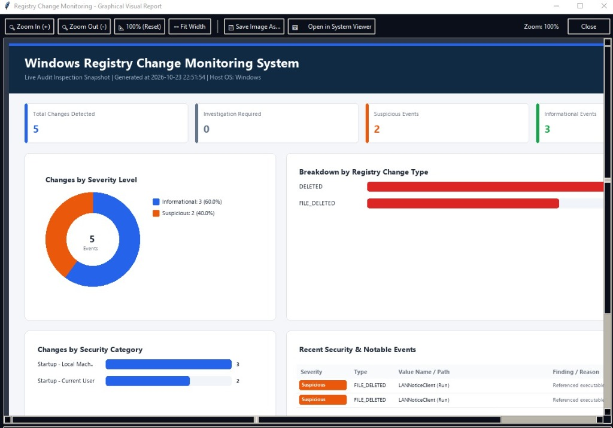
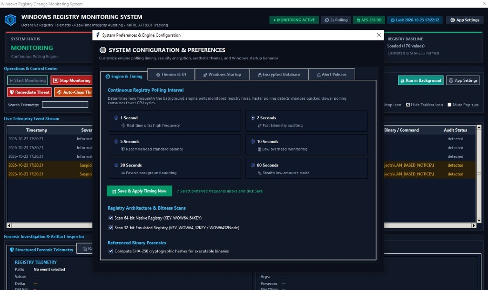

Windows Registry Change Monitoring System
Real-time proactive detection, baseline cryptographic integrity verification, MITRE ATT&CK threat pattern correlation, and automated one-click remediation.
Why Windows Registry Monitoring Matters
The Windows Registry is the primary target for advanced persistent threats (APTs), ransomware operators, and rootkits seeking system survivability and privilege escalation.
Autorun Persistence
Malware implants stealth startup keys in HKCU/HKLM Run, RunOnce, and UserInit to survive system reboots.
Defense Tampering
Ransomware silently disables Windows Defender, real-time scanning, Windows Firewall, and UAC elevation prompts.
Shell Hijacking
Replacement of Explorer.exe shell with malicious payloads, or abusing Winlogon Userinit / Taskman hooks.
Silent Tampering
Zero-day scripts modify hidden registry policies without triggering standard antivirus file scanners.
Multi-Threaded Decoupled Architecture
Built with high-throughput concurrent workers ensuring real-time zero-latency detection without freezing the graphical user interface.
1. Detection Engine
Asynchronous background daemon periodically scans autorun entries, services, security policies, and compares them against baseline snapshots using cryptographic SHA-256 hashes.
2. Rule Correlation
Evaluates modifications through an intelligent rules engine with 10+ heuristics. Automatically tags severity levels (Low, Medium, High, Critical) and maps directly to MITRE ATT&CK techniques.
3. DPAPI & Alert Dispatcher
Secures SMTP / Webhook credentials using Windows DPAPI (CryptProtectData). Dispatches instant alerts to Email, Webhooks, Desktop HUD, and writes immutable audit logs.
Intuitive Command & Control Dashboard
Designed with a dark SOC cyber theme, offering instant situational awareness and fast navigation.

📊 Real-Time Status Telemetry
Live status banners showing Monitoring Status, Total Keys Inspected, Active Threats Flagged, and Baseline Snapshot Timestamps.
⚡ Interactive Action Toolbar
One-click buttons for "Start / Pause Monitor", "Create Baseline", "Verify Integrity", "Export Report", and "Launch Floating HUD".
📋 Color-Coded Event Stream
Multi-column audit table with instant search and severity filtering (Critical, High, Medium, Low).
Active Threat Neutralization & Rollback
Unlike passive detection loggers, this system empowers Blue Teams with active counter-measures.
1-Click Key Reversal (Rollback)
Instantly restores modified or deleted registry keys back to their known-good baseline state with zero manual registry editing.
Active Process Termination
Kills malicious processes associated with newly injected autorun executables before malware can execute persistence scripts.
Privilege Guard & Validation
Enforces UAC administrator validation and creates transactional backup points prior to any remediation operation.

Floating Desktop HUD & DPAPI Vault
Continuous background operational security with zero credential exposure.

🖥️ Always-On Desktop HUD Gadget
A minimalist, draggable, semi-transparent widget displaying live health, threats detected, and memory metrics without intruding on daily workflow.
🔐 Windows DPAPI Credential Vault
Protects SMTP passwords and webhook tokens using hardware/OS-bound master keys via
CryptProtectData. Prevents plain-text credential harvesting from configuration files.
⚙️ Granular Polling Frequency
Dynamically configurable intervals (from 1 second high-intensity audits to 300 second background sweeps).
Rigorous Testing & Forensic Integrity
Comprehensive automated test coverage and cross-format forensic export capabilities.
Unit Tests Passing
100% test suite passing across core engines, rule evaluators, rollback engines, and GUI controllers.
Cryptographic Baseline
Detects zero-byte tampering and unauthorized key changes using cryptographic hashing.
Forensic Exports
One-click automated export to PDF reports, CSV data sheets, and structured JSON incident logs.
Scan Latency
Optimized registry handle enumeration consuming less than 45MB RAM during active polling.
Complete Open-Source Endpoint Security
Ready for academic viva, blue team training, and enterprise endpoint defense evaluation.
📄 Documentation
Complete 24-page Project Report available in Microsoft Word (.docx) & Adobe PDF.
📦 Installer & EXE
Standalone portable binary and Inno Setup Windows installer packaged and validated.
💻 Source Code
Maintained under Git version control with clean commit history on main & piyush branches.